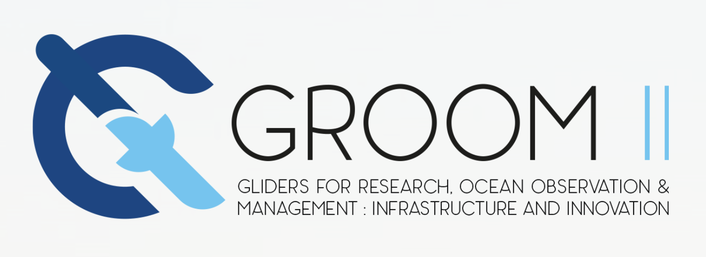

Acknowledgement
11. Acknowledgement¶
The coordination of producing this document was supported by the European Commission via the EuroSea.eu project under H2020 funding (Grant agreement 862626) and GROOM || Horizon 2020 research and innovation programme (Grant agreement No 951842).

Patricia Lopez-Garcia was supported by TechOceanS project which received funding from the European Union’s Horizon 2020 research and innovation programme under grant agreement No 101000858 (TechOceanS). This output reflects only the author’s view and the Research Executive Agency (REA) cannot be held responsible for any use that may be made of the information contained therein.
Tom Hull was supported by “Alternative framework to assess marine ecosystem functioning in shelf seas” (https://projects.noc.ac.uk/altereco/). AlterEco represents a pilot study of a novel monitoring framework to deliver improved spatiotemporal understanding of key shelf sea ecosystem drivers through the use of autonomous systems, primarily underwater gliders. It was funded by the UK National Environment Research Council (NERC), the UK government’s Department for Environment, Food and Rural Affairs (Defra), the World Wide Fund for Nature (WWF) grant numbers NE/P013899/1, NE/P013902/2, NE/P013740/1 and NE/P013864/1.
This work also contributes to the Mediterranean Ocean Observing System for the Environment (MOOSE), which is funded by the CNRS-INSU and the French Ministry for Education and Research (ILICO Research Infrastructure).